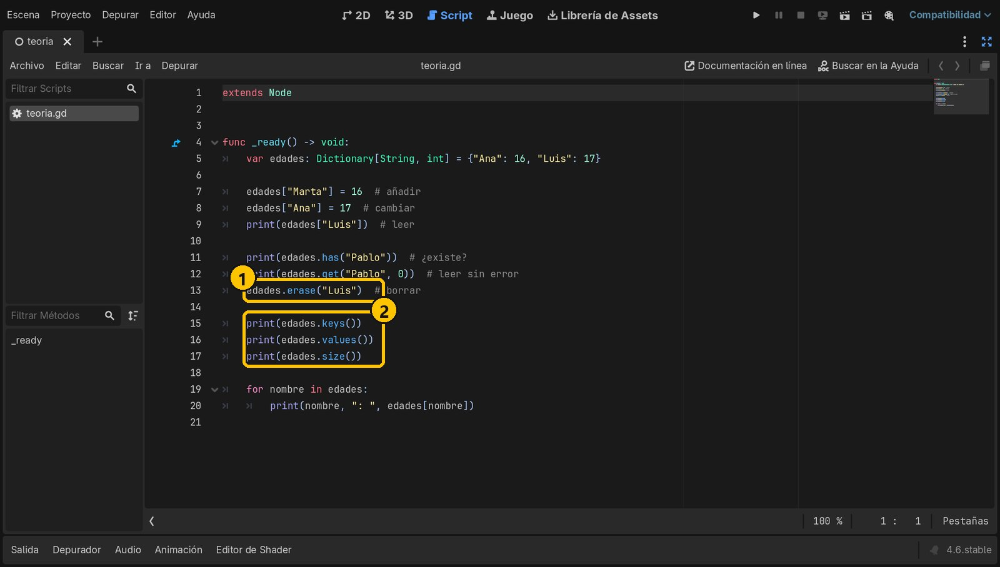
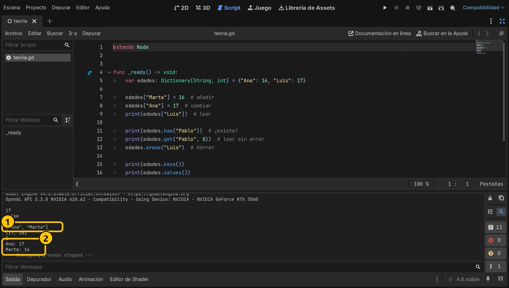

Objetivo
Entender qué es un diccionario, en qué se diferencia de un array y saber usar sus operaciones básicas: crear, leer, añadir, cambiar, comprobar, borrar y recorrer.
Partimos de: Ya sabes crear y recorrer arrays en GDScript. Para probar el código basta con un proyecto vacío: una escena con un nodo Node y este script.
Conceptos clave
ClaveEl nombre con el que guardas y buscas un dato. No se repite: cada clave aparece una sola vez.
ValorEl dato guardado con esa clave. Los valores sí pueden repetirse.
Dictionary[String, int]Diccionario tipado: claves de tipo String y valores de tipo int.
{}Las llaves crean un diccionario. {} es un diccionario vacío.
Paso a paso
1Array frente a diccionario
En un array cada dato tiene una posición (0, 1, 2…). En un diccionario cada dato tiene un nombre, la clave. Compara cómo guardarías las edades de una clase:
var edades_array: Array[int] = [16, 17]
print(edades_array[1]) # 17, pero ¿de quién?
var edades: Dictionary[String, int] = {"Ana": 16, "Luis": 17}
print(edades["Luis"]) # 17, y sabemos que es de Luis2Crear un diccionario
Se escribe entre llaves. Cada pareja es clave: valor y las parejas se separan con comas. Con tipado indicas el tipo de las claves y el de los valores.

- 1Dictionary[String, int] con dos parejas
3Leer, añadir y cambiar
Con la clave entre corchetes lees un valor. Si asignas a una clave nueva, la pareja se añade. Si la clave ya existe, su valor se cambia: en un diccionario no hay claves repetidas.
edades["Marta"] = 16 # clave nueva: se añade
edades["Ana"] = 17 # ya existe: se cambia
print(edades["Luis"]) # leer: 17- 1Añadir
- 2Cambiar
- 3Leer
4¿Y si la clave no existe?
Leer edades["Pablo"] sin que exista da error. Antes pregunta con has(), que devuelve true o false, o usa get(), que devuelve un valor por defecto si la clave no está.
if edades.has("Pablo"):
print(edades["Pablo"])
print(edades.get("Pablo", 0)) # 0 si no existe
- 1has("Pablo")
- 2Imprime false
5Borrar, claves, valores y tamaño
erase(clave) borra una pareja. keys() devuelve un array con las claves, values() un array con los valores y size() cuántas parejas hay. clear() lo vacía entero.
- 1erase: borrar
- 2keys, values, size
6Recorrer con for
En un for, la variable va tomando cada clave; con ella lees su valor. Fíjate en lo que imprime el panel Salida.
for nombre in edades:
print(nombre, ": ", edades[nombre])- 1keys() y values()
- 2El for: cada clave con su valor
7Tres trampas
1. Las claves distinguen mayúsculas: "Ana" y "ana" son distintas. 2. "1" (texto) y 1 (número) también. 3. b = a no copia: las dos variables comparten el mismo diccionario. Para una copia de verdad usa duplicate().
var a: Dictionary[String, int] = {"x": 1}
var b := a # comparten datos
var c := a.duplicate() # copia independiente
b["x"] = 99
print(a["x"]) # 99
print(c["x"]) # 1Resumen
- Un diccionario guarda parejas clave → valor.
- Accedes por la clave, no por la posición.
has,get,erase,keys,valuesysizeson tus herramientas.
Si algo falla
- Error «Invalid access to property or key». Estás leyendo una clave que no existe. Comprueba antes con
has()o usaget(clave, valor_por_defecto). - Busco «ana» y no la encuentra, pero está. Las claves distinguen mayúsculas y minúsculas. Guarda y busca siempre igual (por ejemplo, todo en minúsculas con
to_lower()). - Cambio un diccionario y se cambia también otro. Los dos son el mismo:
=no copia. Usaduplicate().
Prueba tú
- Crea un diccionario
Dictionary[String, String]con el nombre de tres compañeros y su color favorito, y recórrelo con unfor. - Usa
get()para leer el color de alguien que no está, sin que dé error. - Cuenta cuántas veces aparece cada letra en una palabra usando un diccionario
Dictionary[String, int].